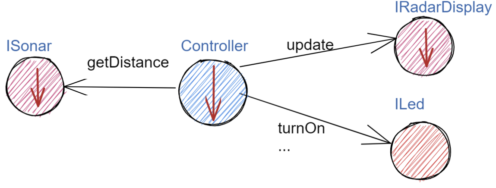
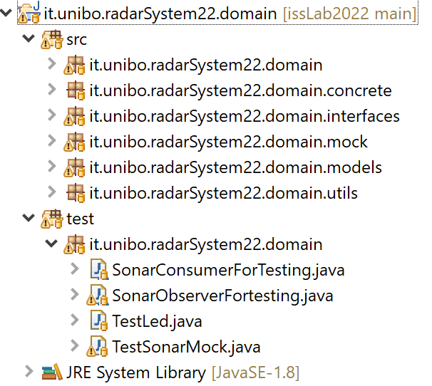

Progettazione e sviluppo¶
Iniziamo il nostro progetto affrontando il primo punto del piano di lavoro proposto dall’analisi (si veda Piano di lavoro)
definizione dei componenti software di base legati ai dispositivi di I/O (Sonar, RadarDisplay e Led);
Si tratta dunque di realizzare i componenti indiicati nella Architettura logica del sistema, che qui riportiamo:
{kind=link}
Usando la terminologia SCRUM, associamo questo obiettivo al primo SPRINT dello sviluppo, al termine del quale la prevista Srint Review farà il punto della situazione con il committente e getterà le basi per il passo successivo, che potrà coincidere o meno con quello pianificato nell’analisi.
Impostiamo il progetto Java organizzato come in figura:
{kind=link}
SPRINT1: Componenti per i dispositivi di I/O¶
Il primo SPRINT del nostro sviluppo bottom-up consiste nel realizzare componenti-base per i dispositivi di I/O, partendo dalle interfacce introdotte nella analisi.
DeviceFactory e file di configurazione¶
Per agevolare la messa a punto di una applicazione, conviene spesso introdurre Mock-objects, cioè dispositivi simulati che riproducono il comportamento dei dispositivi reali in modo controllato.
Inoltre, per facilitare la costruzione di dispositivi senza dover denotare in modo esplicito le classi di implementazione, conviene introdurre una Factory:
public class DeviceFactory {
public static ILed createLed() { ... }
public static ISonar createSonar() { ... }
public static IRadarGui createRadarGui() { ... }
}
Ciascun metodo di DeviceFactory restitusce una istanza di dispositivo reale o Mock in accordo alle specifiche
contenute in un file di Configurazione (DomainSystemConfig.json) che qui ipotizziamo scritto in JSon:
{
"simulation" : "true",
...
}
Questo file di configurazione viene letto dal metodo setTheConfiguration di un singleton DomainSystemConfig
che inizializza variabili static accessibili all’applicazione:
public class DomainSystemConfig {
public static boolean simulation; //set by setTheConfiguration
...
public static void setTheConfiguration( String resourceName ) {
...
fis = new FileInputStream(new File(resourceName));
JSONTokener tokener = new JSONTokener(fis);
JSONObject object = new JSONObject(tokener);
simulation = object.getBoolean("simulation");
...
}
}
Utilità¶
Introduciamo un paio di classi che contegono metodi utili per visualizzare messaggi colorati e per visualizzare informazioni sul sistema in esecuzione.
La classe ColorsOut¶
La classe ColorsOut è una utility per scrivere su standard ouput messaggi colorati.
Il metodo ColorsOut.outerr visualizza un messaggio in colore rosso,
mentre ColorsOut.out lo fa (con colore blu o con un colore specificato esplicitamente come parametro)
quando il parametro di configurazione “tracing” vale “true”.
{
"simulation" : "true",
"tracing" : "true",
...
}
Per ottenere messaggi colorati in Eclipse, occorre installare il plugin ANSI-Escape in Console.
La classe BasicUtils¶
Quesat classe definisce un singleton che fornisce vari metodi tra cui:
public static void showSystemInfo() : visualizza la memoria disponibile e il numero di processori
public static void delay(int dt) : sospende il Thread corrente per dt millisecondi
public static void waitTheUser() : blocca l’esecuzione in attesa che l’utente batta un tasto
public static void aboutThreads(String msg) : visualizza msg seguito dal nome del Thread corrente e il numero totale dei Thread attivi .
Dispositivi reali e Mock¶
Per essere certi che un dispositivo Mock possa essere un sostituto efficace di un dispositivo reale, introduciamo per ogni dispositivo una classe astratta comune alle due tipologie, che funga anche da Factory specifica per quel tipo di dispositivo.
Partiamo ovviamente tenendo conto delle specifiche sulle interfacce introdotte in fase di analisi: Modello ad oggetti del dominio.
Il Led¶
Un Led è un dispositivo di output che può essere modellato e gestito realizzando i metodi di ILed
(vedi Le interfacce ILed e IRadarDisplay) come getter/setter di uno stato interno.
La classe astratta LedModel¶
La classe astratta relativa al Led introduce un metodo abstract denominato ledActivate
cui è demandata la responsabilità di accendere/spegnere il Led.
public abstract class LedModel implements ILed{
private boolean state = false;
//Factory methods
public static ILed create() {
ILed led;
if( DomainSystemConfig.simulation ) led = createLedMock();
else led = createLedConcrete();
}
public static ILed createLedMock(){return new LedMock(); }
public static ILed createLedConcrete(){return new LedConcrete();}
//Abstract methods
protected abstract void ledActivate( boolean val);
protected void setState( boolean val ) {
state = val;
ledActivate( state );
}
@Override
public void turnOn(){ setState( true ); }
@Override
public void turnOff() { setState( false ); }
@Override
public boolean getState(){ return state; }
}
La variabile locale booleana state viene posta a true quando il Led è acceso.
Il LedMock¶
In pratica il LedModel è già un LedMock, in quanto tiene traccia dello stato corrente nella variabile
state.
Poichè il metodo ledActivate ha la responsabilità di definire il codice specifico per
accedendere/spegnere il Led, a livello di Mock possiamo rendere visibile lo stato del Led
sullo standard output.
public class LedMock extends LedModel implements ILed{
@Override
protected void ledActivate(boolean val) { showState(); }
protected void showState(){
ColorsOut.outappl("LedMock state=" + getState(), ColorsOut.MAGENTA );
}
}
Una implementazione più user-friendly potrebbe
introdurre una GUI che cambia di colore e/o dimensione a seconda che il Led sia acceso o spento.
A questo scopo introduciamo anche la classe LedMockWithGui, il cui codice è lasciato al lettore.
Il LedConcrete¶
Il componente che realizza la gestione di un Led concreto, connesso a un RaspberryPi, si può avvalere del software reso disponibile dal committente:
public class LedConcrete extends LedModel implements ILed{
private Runtime rt = Runtime.getRuntime();
@Override
protected void ledActivate(boolean val) {
try {
if( val ) rt.exec( "sudo bash led25GpioTurnOn.sh" );
else rt.exec( "sudo bash led25GpioTurnOff.sh" );
} catch (IOException e) { ... }
}
}
Testing del dispositivo Led¶
Un test automatizzato di tipo Unit-test (si veda Il testing) sul Led può essere espresso usando JUnit come segue:
public class TestLed {
@Before
public void up(){ System.out.println("up"); }
@After
public void down(){ System.out.println("down"); }
@Test
public void testLedMock() {
DomainSystemConfig.simulation = true;
ILed led = DeviceFactory.createLed();
assertTrue( ! led.getState() );
led.turnOn();
assertTrue( led.getState() );
Utils.delay(1000); //to see the ledgui
led.turnOff();
assertTrue( ! led.getState() );
Utils.delay(1000); //to see the ledgui
}
}
Un test sul LedConcrete ha la stessa struttura del test sul LedMock, ma bisogna avere l’avvertenza
di eseguirlo sul RaspberryPi. Eseguendo il test sul PC non vengono segnalati errori (in quanto
il Led ‘funziona’ da un punto di vista logico) ma compaiono messaggi del tipo:
LedConcrete | ERROR Cannot run program "sudo": ...
Il Sonar¶
Un Sonar è un dispositivo di input che deve fornire dati, in modo autonomo o quando richiesto dalla applicazione.
Il software fornito dal committente per l’uso di un Sonar reale HC-SR04 introduce
logicamente un componente attivo, che produce sul dispositivo standard di output,
con una certa frequenza, una sequenza di valori (interi) di distanza.
Nella nostra analisi, invece, il Sonar è un dispositivo produttore di dati di tipo
IDistance (si veda: Le interfacce IDistance e ISonar).
La modellazione di un componente produttore di dati è più complicata di quella di un dispositivo di output in quanto occorre affrontare un classico Problema produttore-consumatore.
La classe astratta SonarModel¶
La classe astratta relativa al Sonar introduce due metodi abstract, uno per specificare il modo di inizializzare il sonar
(metodo sonarSetUp) e uno per specificare il modo di produzione dei dati (metodo sonarProduce).
Inoltre, essa definisce due metodi create che costituiscono Factory-methods per un sonar Mock e un sonar reale.
public abstract class SonarModel implements ISonar{
protected boolean stopped = false; //se true il sonar si ferma
protected IDistance curVal = new Distance(90);
//Factory methods
public static ISonar create() {
if( DomainSystemConfig.simulation ) return createSonarMock();
else return createSonarConcrete();
}
protected SonarModel() { //hidden costructor, to force setup
sonarSetUp();
}
public static ISonar createSonarMock(){return new SonarMock();}
public static ISonar createSonarConcrete(){return new SonarConcrete();}
Il Sonar viene modellato come un processo che produce dati di un tipo che potrebbe essere:
int: è il tipo di dato prodotto dal core-code del Sonar;
String: come rappresentazione del valore ;
IDistance: è il tipo di dato prodotto dal Sonar a livello logico, come espresso dalla interfaccia ISonar.
Poichè i consumtori si aspettano valori di distanza, siamo qui indotti ad optare per la terza opzione
IDistance. Tuttavia, motivi di efficienza potrebbero farci optare per la prima e
motivi di flessibilità e di interoperabilità per la seconda.
La classe Distance¶
La classe che implementa IDistance viene definita come segue:
public class Distance implements IDistance{
private int v;
public Distance(int d) { v=d; }
@Override
public int getVal() { return v; }
@Override
public String toString(){ return ""+v; }
}
Ricordiamo che l’interfaccia IDistance non prevede metodi per modificare un dato di questo tipo, una volta creato.
La produzione dei dati¶
Il codice relativo alla produzione dei dati viene incapsulato in un metodo abstract sonarProduce
che dovrà essere definito in modo diverso da un SonarMock e un SonarConcrete, così come il
metodo di inizializzazione sonarSetUp:
//Abstract methods
protected abstract void sonarSetUp() ;
protected abstract void sonarProduce( );
Il processo di produzione risulta attivo quando la variabile locale stopped è true.
Di qui le seguenti definizioni:
@Override
public void deactivate() { stopped = true; }
@Override
public boolean isActive() { return ! stopped; }
Con queste premesse, il metodo activate deve
attivare un Thread interno di produzione di dati:
@Override
public void activate() {
stopped = false;
new Thread() {
public void run() {
while( ! stopped ) { sonarProduce(); }
}
}.start();
}
La parte applicativa che funge da consumatore dei dati prodotti dal Sonar dovrà invocare il metodo
geDistance che viene definito in modo da restituire il valore corrente prodotto da Sonar:
@Override
public IDistance getDistance() {
return curVal;
}
La variabile curVal dovrebbe essere logicamente protetta da un meccanismo di mutua esclusione.
Tuttavia i dati sono in continuo aggiornamento e l’eventuale lettura di un valore non completamente modificato
non è qui un problema.
Il SonarMock¶
Un Mock-sonar che produce valori di distanza da 90 a 0 può quindi ora essere definito come segue:
public class SonarMock extends SonarModel implements ISonar{
private int delta = 1;
@Override
protected void sonarSetUp(){ curVal = new Distance(90); }
@Override
protected void sonarProduce() {
if( DomainSystemConfig.testing ) {
updateDistance( DomainSystemConfig.testingDistance );
stopped = true; //one shot
}else {
int v = curVal.getVal() - delta;
updateDistance( v );
stopped = ( v <= 0 );
Utils.delay(DomainSystemConfig.sonarDelay); //avoid fast generation
}
}
Si noti che:
viene definito un nuovo parametro di configurazione
testingche, quandotrue, denota che il sonar sta lavorando in una fase di testing, per cui produce un solo valore dato dal parametrotestingDistance. Ciò al fine di controllare il Sonar come emettitore di un dato noto.viene definito un nuovo parametro di configurazione
DLIMITper permettere il setting ditestingDistancein funzione di un valore prefissato (si veda Testing del dispositivo Sonar).viene definito un nuovo parametro di configurazione
sonarDelayper un rallentamento della frequenza di generazione dei dati.
Il file DomainSystemConfig.json si arricchisce di specifiche:
{
"simulation" : "true",
...
"DLIMIT" : "15",
"testing" : "false"
"testingDistance" : "10" ,
"sonarDelay" : "100"
"sonarDistanceMax" : "150"
}
Il SonarConcrete¶
Il componente che realizza la gestione di un Sonar concreto, connesso a un RaspberryPi,
si può avvalere del programma SonarAlone.c fornito dal committente.
public class SonarConcrete extends SonarModel implements ISonar{
private Process p ;
private BufferedReader reader ;
@Override
protected void sonarSetUp() {
curVal = new Distance(90);
}
@Override
public void activate() {
if( p == null ) {
try {
p=Runtime.getRuntime().exec("sudo ./SonarAlone");
reader=new BufferedReader( new InputStreamReader(p.getInputStream()));
}catch( Exception e) { ... }
}
super.activate();
}
protected void sonarProduce() {
try {
String data = reader.readLine();
if( data == null ) return;
int v = Integer.parseInt(data);
int lastSonarVal = curVal.getVal();
//Eliminiamo dati del tipo 3430
if( lastSonarVal != v && v < DomainSystemConfig.sonarDistanceMax) {
updateDistance( v );
}
}catch( Exception e) { ... }
}
@Override
public void deactivate() {
curVal = new Distance(90);
if( p != null ) {
p.destroy();
p=null;
}
super.deactivate();
}
}
Testing del dispositivo Sonar¶
Il testing di un sonar riguarda due aspetti distinti:
il test sul corretto funzionamento del dispositivo in quanto tale. Supponendo di porre di fronte al Sonar un ostacolo a distanza \(D\), il Sonar deve emettere dati di valore \(D \pm \epsilon\).
il test sul corretto funzionamento del componente software responsabile della trasformazione del dispositivo in un produttore di dati consumabili da un altro componente.
Ovviamente qui ci dobbiamo occupare della seconda parte, supponendo che la prima sia soddisfatta. A tal fine possiamo procedere come segue:
per il SonardMock, poichè siamo noi a generare la sequenza di valori, possiamo verificare che un unico consumatore riceva dal metodo
getDistancei valori nella giusta sequenza;per il SonarConcrete, poniamo uno schermo a distanza prefissata \(D\) e verifichiamo che un consumatore riceva dal metodo
getDistancevalori \(D \pm \epsilon\).
Un processo consumatore di dati emessi dal sonar può essere definito verificando l’aspettativa di ricevere dati nell’intervallo di confidenza stabilito:
class SonarConsumerForTesting extends Thread{
private ISonar sonar;
private int delta;
public SonarConsumerForTesting( ISonar sonar, int delta) {
this.sonar = sonar;
this.delta = delta;
}
@Override
public void run() {
int v0 = sonar.getDistance().getVal();
while( sonar.isActive() ) {
BasicUtils.delay(DomainSystemConfig.sonarDelay/2); //non perdere dati
IDistance d = sonar.getDistance();
int v = d.getVal();
int vexpectedMin = v0-delta;
int vexpectedMax = v0+delta;
assertTrue( v <= vexpectedMax && v >= vexpectedMin );
v0 = v;
}
}
}
Una TestUnit automatizzata per il SonarMock può essere quindi definita in JUnit come segue:
@Test
public void testSonarMock() {
DomainSystemConfig.simulation = true;
DomainSystemConfig.sonarDelay = 10; //quite fast generation...
int delta = 1;
ISonar sonar = DeviceFactory.createSonar();
new SonarConsumerForTesting( sonar, delta ).start();
sonar.activate();
while( sonar.isActive() ) {Utils.delay(100);} //avoid premature exit
}
Una TestUnit per il SonarConcrete è simile, una volta fissato il valore \(delta=\epsilon\)
di varianza sulla distanza-base.
SPRINT1: L’applicazione¶
Reimpostiamo il progetto Java it.unibo.radarSystem22 organizzandolo come in figura:
{kind=link}
Il Controller¶
Il componente che realizza la logica applicativa in ambiente locale con dispositivi Mock o concreti può essere definito partendo dal modello introdotto nella fase di analisi (La logica del Controller) , attivando un Thread che realizza lo schema read-eval-print.
public class Controller {
private ILed led;
private ISonar sonar;
private IRadarDisplay radar;
private ActionFunction endFun;
//Factory method
public static Controller create(
ILed led, ISonar sonar,IRadarDisplay radar) {
return new Controller( led, sonar, radar );
}
//Constructor
private Controller( ILed led, ISonar sonar,IRadarDisplay radar) {
this.led = led;
this.sonar = sonar;
this.radar = radar;
}
public void start( ActionFunction endFun, int limit ) {
this.endFun = endFun;
sonar.activate( limit );
activate( limit );
}
Il Controller riceve in ingresso i (riferimenti ai) componenti del sistema e può essere attivato
invocando il metodo start il cui argomento limit fissa un limite massimo al numero delle iterazioni.
Azioni di fine lavoro¶
Il primo argomento (endFun) del metodo start del Controller è una funzione di callback
che implementa la seguente interfaccia:
public interface ActionFunction {
void run(String result);
}
Una funzione di questo tipo verrà invocata al termine delle attività del Controller, che si presenta come un oggetto attivo.
Poichè vale che:
la funzione di callback è una chiusura lessicale sul chiamante
l’invocazione della funzione permette al chiamante della operazione start di utilizzare nel suo contesto computazionale
eventuali risultati prodotti dal controller, quando questi termina l’esecuzione. Si noti però che questa attività verrà
svolta nel Thread del Controller.
Il funzionamento del Controller¶
Il metodo start attiva il Sonar e lancia un Thread interno di lavoro.
protected void activate( int limit ) {
new Thread() {
public void run() {
try {
sonar.activate();
//while( sonarActive() ) {
if( sonar.isActive() ) {
for( int i=1; i<=limit; i++) { //meglio per il testing
IDistance d = sonar.getDistance();
if( radar != null) RadarGuiUsecase.doUseCase(radar,d);
LedAlarmUsecase.doUseCase( led, d );
}
}
sonar.deactivate();
endFun.run("Controller | BYE ");//CALLBACK
} catch (Exception e) { ... }
}
}.start();
}
}
Si noti che il Controller realizza ciascun requisito invocando uno specifico componente (RadarGuiUsecase e LedAlarmUsecase).
Logicamente, la computazione prosegue fintanto che il Sonar è attivo; tuttavia, la messa a punto del sistema (e il testing) può essere agevolato limitando a priori il numero di iterazioni.
Notiamo anche che il Controller evita (al momento) di realizzare il requisito radarGui
(si veda SonarObservable: Requisiti) se riceve in ingresso un riferimento nullo al RadarDisplay.
LedAlarmUsecase¶
public class LedAlarmUsecase {
public static void doUseCase(ILed led, IDistance d) {
try {
if( d.getVal() < DomainSystemConfig.DLIMIT ) led.turnOn();
else led.turnOff();
} catch (Exception e) { ... }
}
}
RadarGuiUsecase¶
public class RadarGuiUsecase {
public static void doUseCase( IRadarDisplay radar, IDistance d ) {
radar.update(""+d.getVal(), "90");
}
}
Il sistema in locale¶
La prima, semplice versione del sistema da eseguire e testare lavora su un singolo computer (PC o Raspberry) con dispositivi simulati o (nel caso di Raspberry) reali.
public class RadarSystemSprint1Main implements IApplication{
private ISonar sonar = null;
private ILed led = null;
private IRadarDisplay radar = null;
private Controller controller;
@Override
public String getName(){ return this.getClass().getName(); }
@Override
public void doJob(String domainConfig, String systemConfig) {
setup(domainConfig, systemConfig);
configure();
ActionFunction endFun = (n) -> {
System.out.println(n);
terminate();
};
//start
controller.start(endFun, 30);
}
public void terminate() {
BasicUtils.aboutThreads("Before deactivation | ");
sonar.deactivate();
System.exit(0);
}
...
public static void main( String[] args) throws Exception {
new RadarSystemSprint1Main().doJob(null,null); //su
/*
//su Rasp:
new RadarSystemSprint1Main().doJob(
"DomainSystemConfig.json","RadarSystemSprint1Main");
*/
}
L’interfaccia IApplication¶
Poichè dovremo realizzare diverse versioni/configurazioni del sistema, sia in locale sia in distribuito, introduciamo qui il vincolo che ciascuna delle versioni del sistema dovrà implementare l’interfaccia che segue.
public interface IApplication {
public void doJob(String configFileName, String systemConfig);
public String getName();
}
Ogni versione del sistema dovrà duque fornire un nome (con cui potrà essere selezionata) e un metodo doJob
che riceve in ingresso il file di configurazione del dominio e il file di configurazione del sistema.
WORKTODO: Programma di selezione applicazioni
Definire un programma che offre ad un utente un elenco di nomi di applicazioni da cui l’utente può scegliere per attivarne una.
Fase di setup¶
Il metodo setup del Main applicativo fissa i parametri di configurazione leggendo i file di configurazione
oppure assegnando loro un valore a livello di programma.
Osserviamo che:
Quando attiaviamo il sistema su PC usando un IDE (Eclipse o IntelliJ), conviene fissare i parametri di configurazione all’interno del codice.
Quando attiviamo il sistema su Raspberry usando come distribuzione un file
jar, conviene fissare i parametri di configurazione utilizzando il fileDomainSystemConfig.json.
public class RadarSystemSprint1Main implements IApplication{
public void setup(String domainConfig,String systemConfig ) {
if( domainConfig != null ){
DomainSystemConfig.setTheConfiguration(domainConfig);
}if( systemConfig != null ) {
RadarSystemConfig.setTheConfiguration(systemConfig);
}
if( domainConfig == null && systemConfig == null) {
DomainSystemConfig.testing = false;
DomainSystemConfig.sonarDelay = 200;
//Su PC
DomainSystemConfig.simulation = true;
DomainSystemConfig.DLIMIT = 70;
DomainSystemConfig.ledGui = true;
RadarSystemConfig.RadarGuiRemote = false;
//Su Raspberry (nei files di configurazione)
//DomainSystemConfig.simulation = false;
//DomainSystemConfig.DLIMIT = 12;
//DomainSystemConfig.ledGui = false;
//RadarSystemConfig.RadarGuiRemote = true;
}
}//setup
...
}//RadarSystemMainLocal
Fase di configurazione¶
Il metodo configure crea i dispositivi simulati concreti a seconda dei parametri di
configurazione.
protected void configure() {
//Dispositivi di Input
sonar = DeviceFactory.createSonar();
//Dispositivi di Output
led = DeviceFactory.createLed();
radar = RadarSystemConfig.RadarGuiRemote ?
null : DeviceFactory.createRadarGui();
BasicUtils.aboutThreads("Before Controller creation | ");
//Controller
ActionFunction endFun = (n) -> { System.out.println(n); terminate(); };
controller = Controller.create(led, sonar, radar );
}
WORKTODO: Analisi dei Thread
Avvalersi della utility
BasicUtils.aboutThreadsper osservare i thread al lavoro nelle varie fasi di attività del sistema.
Utilità per il testing¶
Inseriamo nel main program metodi che restitusicono un riferimento ai componenti del sistema, in modo da poterne referenziare le proprietà durante il testing automatizzato:
public class RadarSystemMainLocal {
...
public IRadarDisplay getRadarGui() { return radar; }
public ILed getLed() { return led; }
public ISonar getSonar() { return sonar; }
public Controller getController() { return controller; }
}
Testing (su PC)¶
La testUnit introduce un metodo di setup per definire i parametri di configurazione (in modo da non dipendere da files esterni) e per costruire il sistema.
public class TestSystemAtSprint1 {
private RadarSystemMainLocal sys;
@Before
public void setUp() {
System.out.println("setUp");
try {
sys = new RadarSystemSprint1Main();
sys.setup(null,null);//non usiamo i files di config
sys.configure();
DomainSystemConfig.testing = true;
} catch (Exception e) {
fail("setup ERROR " + e.getMessage() );
}
}
Come anticipato in fase di analisi dei requisiti, impostiamo un test nel caso in cui
il Sonar produca un valore d>DLIMIT e un altro test per il Sonar che produce un valore d<DLIMIT.
@Test
public void testFarDistance() {
DomainSystemConfig.testingDistance = DomainSystemConfig.DLIMIT + 20;
testTheDistance( false );
}
@Test
public void testNearDistance() {
DomainSystemConfig.testingDistance = DomainSystemConfig.DLIMIT - 5;
testTheDistance( true );
}
protected void testTheDistance( boolean ledStateExpected ) {
RadarDisplay radar = RadarDisplay.getRadarDisplay(); //singleton
ActionFunction endFun = (n) -> { //eseguita quando il Controller termina
System.out.println(n);
boolean ledState = sys.getLed().getState();
int radarDisplayedDistance = radar.getCurDistance();
assertTrue( ledState == ledStateExpected
&& radarDisplayedDistance == DomainSystemConfig.testingDistance);
};
sys.getController().start( endFun, 1 ); //one-shot
Utils.delay(1000) ; //give time to work ...
}
SPRINT1: Deployment su RaspberryPi¶
Per fare il deployment del sistema su RaspberryPi ed eseguire l’applicazione Il sistema in locale dobbiamo eseguire quanto riportato qui di seguito:
Impostazione del main file in
build.gradlemainClassName = 'it.unibo.radarSystem22.sprint1.RadarSystemSprint1Main'
Creazione del file di distribuzione
gradle distZip -x test
Trasferimento del file
it.unibo.radarSystem22-0.1.zipsu RaspberryPi e unzippingPosizionamento nella directory di lavoro:
it.unibo.radarSystem22-0.1/binCopia nella directory di lavoro del codice richiesto per l’uso dei dispositivi concreti
Impostazione dei parametri di configurazione nel file
DomainSystemConfig.jsoneRadarSystemConfig.jsonnella directory di lavoro
Esecuzione di
./it.unibo.radarSystem22-0.1
Un sistema più reattivo¶
L’uso di un Sonar osservabile permette di eseguire la business logic del Controller all’interno di un componente che riceve i dati dal Sonar non appena vengono prodotti.
WORKTODO: Sonar osservabile
Definire un componente
SonarObservablesecondo quanto prospettato in Il pattern observer e definire il relativo (piano di) test.